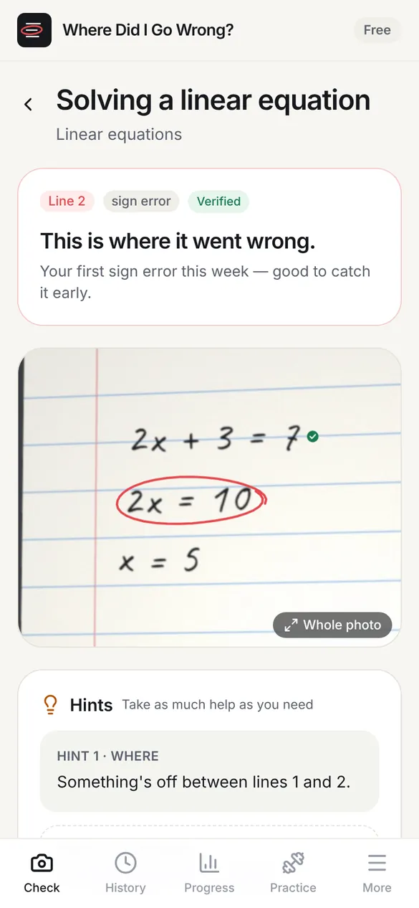
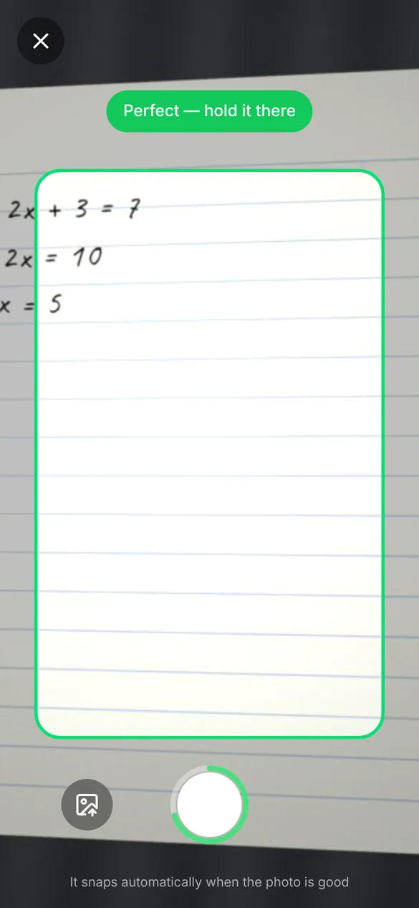
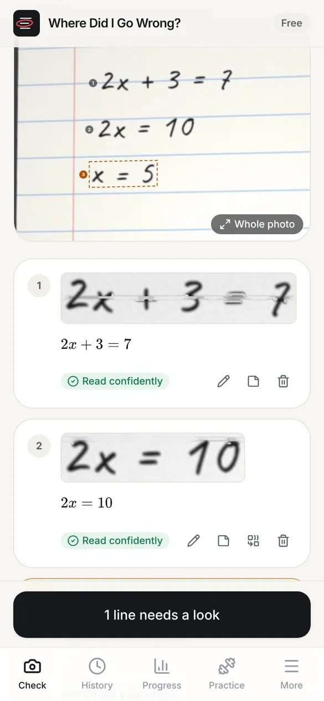
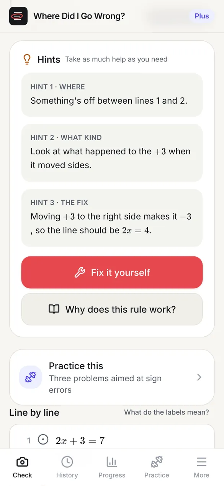
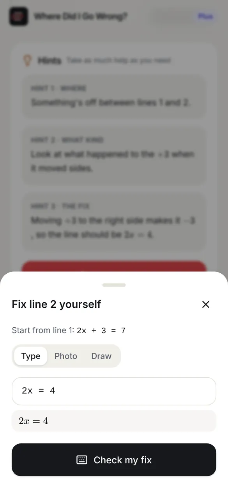
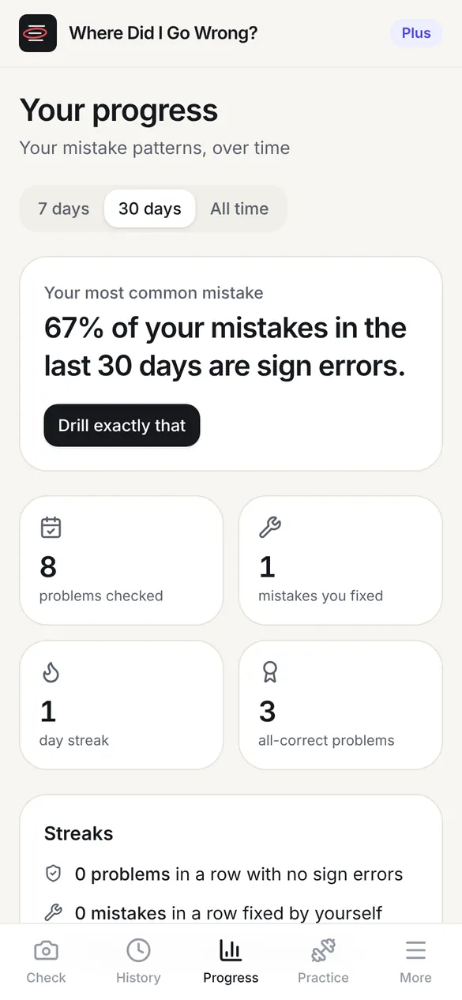
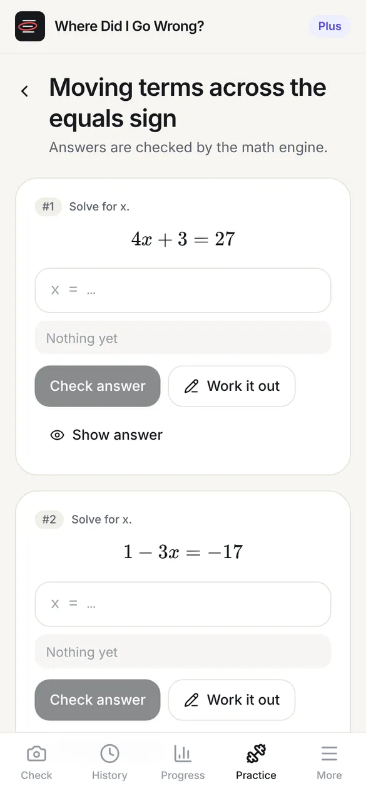
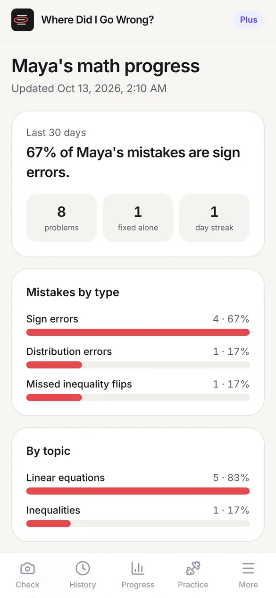

Algebra · Homework checker for ages 12–18
Find the exact line where your math went wrong.
Take a photo of your worked solution. The app reads every line, checks each step with a real math engine and circles the first one that broke, without giving away the answer.
Free to use. No sign-up. Works in your phone's browser.

the first step that broke
what kind of mistake
↑ it circles the first step that broke
01 · How a check works
Snap it, confirm it, see it.
You do the math. The app checks the reasoning between each pair of lines.

Step 1
Point at the page
The camera coaches you on light, angle and blur, then takes the photo by itself when the page is sharp.

Step 2
Check what it read
Each line is shown next to the app's reading. If one is smudged, it asks instead of guessing.
Step 3
See the broken step
The first wrong line gets a red circle and a name: sign error, distribution, a missed inequality flip.
02 · Hints, not answers
Take only as much help as you need.
Seeing where you slipped is usually enough. If it isn't, open the next hint. The final answer stays hidden unless you ask for it.
- Hint 1Where“Something's off between lines 1 and 2.”
- Hint 2What kind“Look at what happened to the +3 when it moved sides.”
- Hint 3The fix“Moving +3 makes it −3, so the line should be 2x = 4.”
- ThenFix it yourselfRewrite the broken line by typing, drawing or taking a photo. The app checks your fix and carries on.


03 · Why you can trust the red circle
The AI reads your handwriting. A math engine does the grading.
Language models are good at reading messy writing and bad at arithmetic. So the app uses one for reading and never for judging.
- 12x + 3 = 7the problem
- 22x = 10not equivalent · sign error
- 3x = 5follows from line 2
+3 moved sides but stayed +3
Read twice
Every photo is read twice. If the two readings disagree on a line, you're asked to confirm it before anything is graded.
Checked exactly
Each pair of lines is tested with exact fractions at random values and then proved symbolically. Results are labelled verified or checked numerically so you know how sure it is.
Only the first break
Later lines that follow correctly from a mistake aren't marked wrong. You fix one thing at a time.
Measured on generated test sets in the project repository. The 3 missed plants left the step mathematically valid. Accuracy on real handwriting depends on the vision model used.
04 · Stop making the same mistake
It learns which mistakes are yours.
The same few mistakes tend to come back. The app keeps count of yours, then gives you practice aimed at them.
- Mistake profile. “67% of your mistakes this month are sign errors.”
- Targeted practice. Fresh problems on your weakest skill, brought back on a spaced schedule.
- Why does this rule work? Short lessons on the idea behind each rule, not just the rule.
- Test prep. Your top three mistake types and a ten-minute drill the night before.


05 · For parents and tutors
See the patterns, not the homework.
Students can share a private link that shows what they're working on and how it's going. It updates as they practice and can be switched off at any time.

06 · Plans
Free finds your mistake. Plus helps you stop making it.
Free
For checking tonight's homework.
- Guided camera
- A few checks a day
- The red circle and hint 1
- Fix it yourself
- Algebra
- Last 7 days of history
Plus
Everything, for one student.
- Unlimited checks
- All three hints
- Full mistake profile
- Targeted practice and test prep
- Whole-page mode
- Calculus
- Parent and tutor sharing
Family
Plus for several students.
- Everything in Plus
- One parent view for all students
- Annual pricing timed to the school year
Early access: every plan is free to try while payments are off. No card needed.
07 · Questions
Things people ask.
Will it just give my kid the answers?
No. It points to the line that broke and names the kind of mistake. Hints go one step at a time, and the final answer only appears if the student specifically asks for it.
What math does it handle?
Algebra: linear equations, inequalities, distributing, combining like terms, exponents, factoring and quadratics. Plus adds derivatives and integrals.
Does it work with messy handwriting?
Usually. The camera waits for a sharp photo, every line is read twice, and anything unclear is shown to you to confirm. You can also type a problem in instead.
What happens to the photos?
They're processed in memory and thrown away. History stays on your device unless you choose to make an account to sync it.
Do I need an account?
No. Accounts are optional, for ages 13 and up, and only used to keep your history across devices.
Is it an app I download?
It runs in your phone's browser. Add it to your home screen and it opens full screen like any other app, and still opens without a connection.
08 · Get it
Check your next problem.
Open it on your phone, pick a problem you already worked out, and see where it went.
iPhone or iPad
- Open the app in Safari.
- Tap Share, then Add to Home Screen.
- Tap Add.
Android, Windows or Mac
- Open the app in Chrome or Edge.
- Open the menu ⋮.
- Choose Install app.